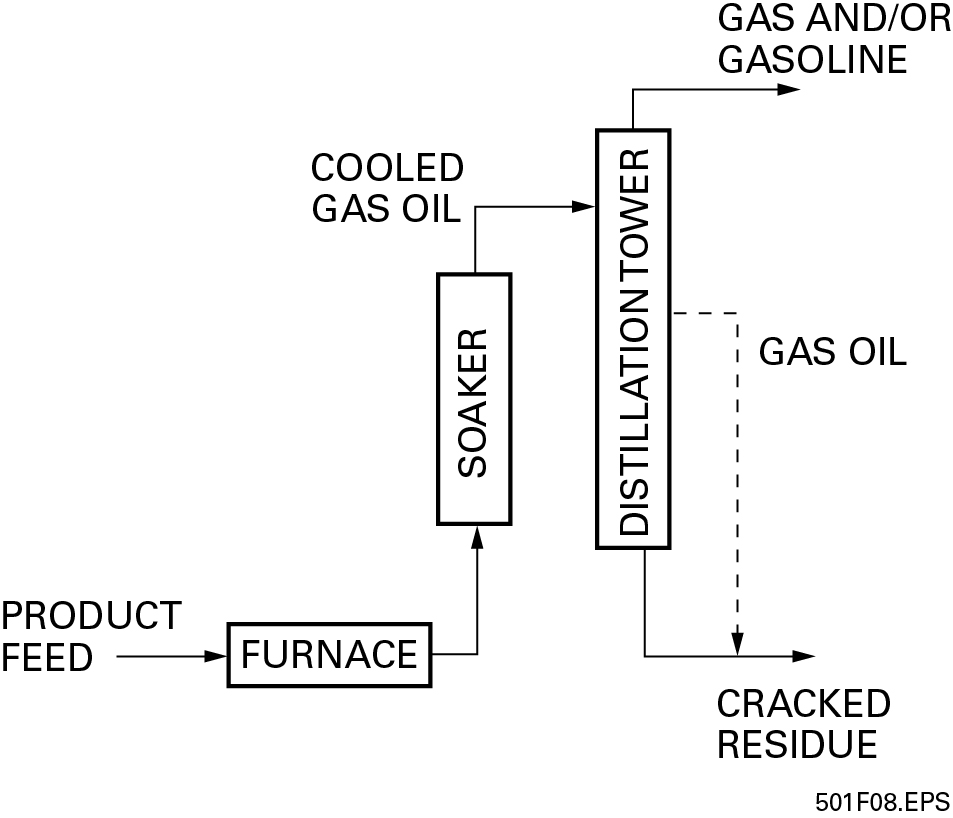

3.2.1 Thermal Cracking
Some products created in atmospheric or vacuum distillation towers have unusually high boiling points. To break down the molecules in such products, without damaging them, requires additional heat and pressure. That process is called thermal cracking. The following are a few forms of thermal cracking:
-
Visbreaking process – Visbreaking is a mild form of thermal cracking. The visbreaking process heats the product to temperatures between 800°F and 950°F while the product is under normal atmospheric pressure. The result is that the viscosity of the product is lowered, but the boiling point of the product is not reached. Cool gas oil is often used to keep the product from being overcracked or flashing in a distillation tower. The visbreaking process is used at various other points in the overall refining process. This process would be used on a product such as the heavy crude oil residues taken at the bottom of the atmospheric and vacuum distillation towers. Figure 8 shows a typical visbreaking process.
Figure: Figure 8 Typical visbreaking process.  -
Steam cracking process – Another thermal cracking process uses steam to heat the product to temperatures between 1,500°F and 1,600°F while the product is being exposed to pressures slightly above atmospheric pressure. Steam cracking is often used to extract a product called benzene from a naphtha product. Benzene is a solvent, and is used as a base for metal cutting fluids, as well as many other industrial processes.
-
Coking processes – A severe method of thermal cracking is called coking. Coking is often used to upgrade heavy residuals (from previous processes) into lighter products or distillates. The coking process completely reduces the hydrogen left in a product and leaves a carbon residue commonly called coke. There are two different coking processes, delayed coking and continuous coking. Figure 9 shows a typical delayed coking process.
Figure: Figure 9 Delayed coking process. 
-
In delayed coking, the residue feedstock is heated to temperatures between 900°F and 950°F at low (25 to 30 psi) pressures before being placed into large coke drums for approximately 24 hours to allow the cracking reactions to finish. The cracking converts the residue into lighter products that may later become useful products. After a drum of product is completely processed, steam, water, or mechanical devices are used to strip any residue left from the coking process. The residue is recycled into the furnace.
-
When a delayed coking unit is full of coke, it is taken offline and allowed to cool. Once it is cool, it must be unheaded (opened from top and bottom) so that the coke can be broken up. It is common to use high-pressure waterjetting equipment to break up the hardened coke.
-
The initial unheading is done as soon as it seems probable that the coker and coke are cool enough for safety. However, there is always the risk of pockets of hot material, including hydrogen or steam, which can explode. Appropriate PPE must be worn, and the head must be loosened all around so that air can enter the coking unit and trigger any possible reactions before the operator is exposed to the result. It is best to use a shield for the waterjetting operator, since the high-pressure water may also open a hot pocket and release hazardous material or flash into steam itself.
-
In a continuous coking process, the residue feedstock is placed inside a radial mixer called a reactor and then exposed to temperatures and pressures higher than those found in delayed coking. The products are the same as those resulting from the delayed coking process.
WARNING!
Follow all safety procedures for the decoking process; there are many ways for injury or death to occur when dealing with a fresh coker.